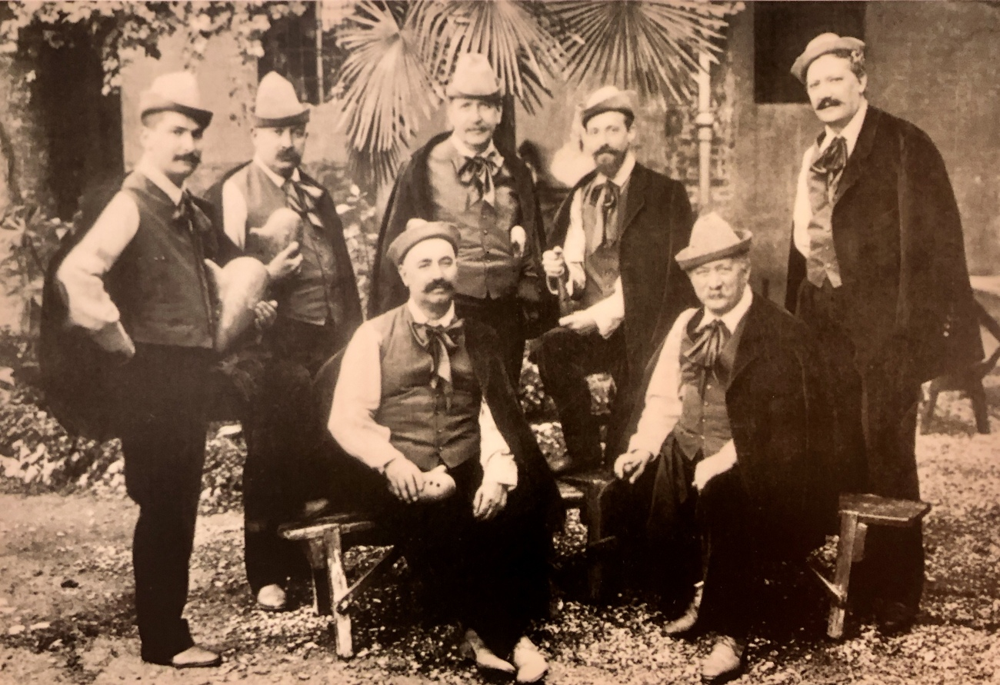
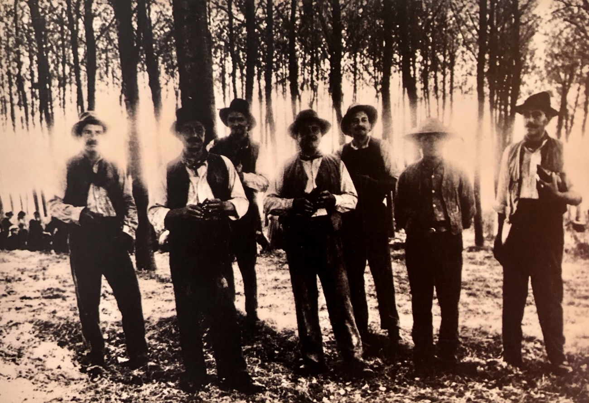
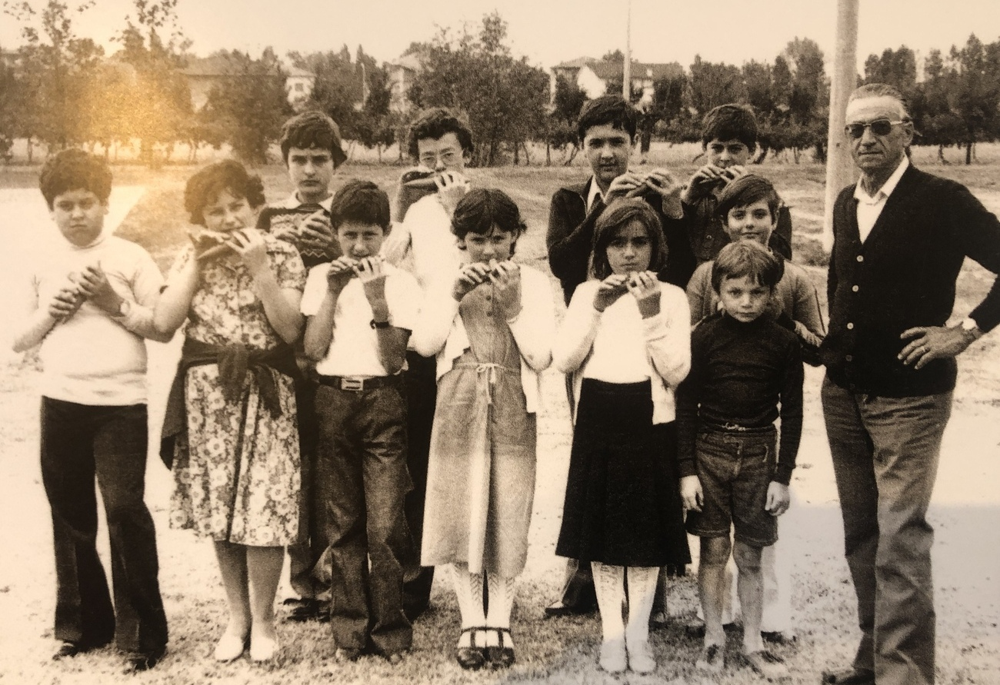

1873-1877: gli anni d'oro dei Montagnards des Apenins
“Il concerto di ocarine al Crystal Palace - Un concerto di ocarine significa musica suonata su strumenti in terracotta, chiamati ocarine. Gli ocarinisti vestiti nei loro pittoreschi costumi si sono presentati alla Haendel orchestra e sui loro strumenti, chiamati ocarine, hanno suonato una selezione di brani d’opera con perfetta abilità (...). Una selezione da Il Trovatore, seguito dall’ouverture dal Guglielmo Tell, hanno sorpreso quanto entusiasmato il pubblico; ma il grande successo è stato una polka, con l’accompagnamento del canto degli uccelli, quest’ultimo imitato alla perfezione da uno degli ocarinisti. Comunque, l’effetto di tutto il concerto è stato eccellente e i suonatori sono stati richiamati per ricevere i complimenti del pubblico dopo ogni chef d’oeuvre. Non abbiamo alcun dubbio che questi concerti attrarranno folle di visitatori, non solo per la loro novità e le loro peculiarità, ma per l’eccellenza intrinseca delle selezioni musicali e per l’abilità degli esecutori. La difficile ouverture del Guglielmo Tell è stata resa con tutto il fuoco e la precisione di un’intera orchestra “ (Londra, Daily News, 13 Luglio 1874)
 Così recitavano i giornali europei a proposito dei concerti del primo Gruppo Ocarinistico Budriese, attorno agli anni settanta del XIX secolo.
Così recitavano i giornali europei a proposito dei concerti del primo Gruppo Ocarinistico Budriese, attorno agli anni settanta del XIX secolo.
Malgrado Budrio non sia sicuramente un paese di montagna, il gruppo si presentava col nome di Société des concertistes italiens surnommés les celèbres Montagnards des Apenins, probabilmente a causa dei pittoreschi costumi da pastori abruzzesi indossati sulla scena. Ovunque gli ocarinisti riscuotevano un successo stupefacente: Berlino, Vienna, Londra, Parigi, Barcellona, le capitali della cultura occidentale dell’Ottocento, li accolsero con grande calore e interesse, come è testimoniato dai giornali dell'epoca.
Il gruppo era formato da sette giovani musicisti budriesi, amici dell'inventore Donati: Federico Vignoli, Ulisse Avoni, Alberto Mezzetti, Davide Mignani, Giuseppe Grossi, Ercole Mezzetti, Cesare Vicinelli. Alcuni di loro erano anche diplomati al Conservatorio.
Manifestazioni di grande importanza, a cominciare dalle esposizioni internazionali di Londra e Parigi, furono teatro dei concerti di questo gruppo che per lo più si esibiva di fronte a platee numerose, nel contesto di spettacoli circensi allora particolarmente in voga. Ed è grazie a questi successi internazionali che l'ocarina si è diffusa dapprima in Europa e poi nel mondo.
Prima di giungere ad un simile successo internazionale, si ha notizia di un quintetto formato da Federico Vignoli (prima ocarina), Ulisse Avoni, Giuseppe Donati, Giuseppe Grossi (direttore) e Cesare Vicinelli che tra il 1869 e 1872 cominciò ad esibirsi nei teatri dell’Emilia-Romagna e poi sempre più lontano (Padova, Venezia, Trieste), fino ad arrivare ai teatri romani.
Fu proprio a Roma che nel 1870 fu ascoltato ed applaudito, nell’intervallo del Rigoletto, dallo stesso Giuseppe Verdi: sì, perché una delle attività più richieste agli ocarinisti era quella di suonare nei foyer dei teatri, durante gli intervalli delle opere, riprendendo i temi e le arie che il pubblico aveva appena sentito in sala, facendo così da accompagnamento ai rinfreschi che usualmente si tenevano tra un atto e l’altro.
I gruppi ocarinistici a Budrio tra otto e novecento
da Cesare Testi ad Alfredo Barattoni
L'età d'oro dei Montagnards va dal 1869 al 1878, e quando il gruppo si scioglie e la maggior parte dei suoi componenti rientra in Italia. Sappiamo che nei venti anni successivi l'attività concertistica è proseguita sotto la guida del M° Cesare Testi, ma purtroppo la documentazione su questo periodo è scarsissima.
Nel 1911 il gruppo, formato da alcuni giovani e dagli ormai anziani Vicinelli e Vignoli, si esibisce a Roma alla Mostra Etnografica, di fronte a migliaia di persone, ottenendo un grande successo.
Viene abbandonato per l'occasione il costume da pastore abruzzese, per adottarne uno tipicamente romagnolo disegnato dal pittore Augusto Majani “Nasica”, e con esso sparisce il nome di Montanari dell'Appennino, sostituito dal più sobrio Gli ocarinisti di Budrio.
Sarà solo a partire dal 1926 che il Gruppo Ocarinistico Budriese, sotto la guida del M° Alfredo Barattoni, che lo dirigerà con abnegazione fino alla sua morte nel 1948, vedrà finalmente rinascere le proprie fortune.
Ma ormai i tempi sono cambiati, i gusti musicali sono diversi, e nonostante i significativi successi che i musicisti budriesi conseguono in quegli anni, la loro attività non avrà più quel respiro internazionale che li aveva resi celebri mezzo secolo prima. Nonostante ciò, per quasi vent’anni il gruppo si esibisce nei teatri italiani, suona ripetutamente alla radio e incide vari dischi per la Columbia e per La voce del padrone, riservandosi sporadiche apparizioni all’estero per suonare in Svizzera e a Parigi.
Questo periodo di attività è importante soprattutto per la sbalorditiva quantità di composizioni e trascrizioni che il M° Barattoni riesce a produrre, molte delle quali di notevole interesse musicale.
Il Gruppo del Centenario e la partecipazione al film “Novecento”
Nel secondo dopoguerra il gruppo si ricostituisce grazie all'apporto di alcuni giovani, già allievi di Barattoni. L'attività prevalente si svolge in ambito locale, il repertorio eseguito è in gran parte costituito da musica da ballo. E' da segnalare la partecipazione alla trasmissione televisiva Campanile sera nel 1958.
Nel 1963 il gruppo partecipa alla celebrazione del centenario dalla nascita dell'ocarina (in realtà si tratta dei cento anni dalla nascita del primo quintetto), in occasione della quale viene pubblicato il libro di Aldo Adversi “L'ocarina di Budrio”. Tra i musicisti che hanno fatto parte del gruppo negli anni '60 e '70 ricordiamo: Arrigo Mignani, Tiziano Federici, Paolo Scazzieri (che, come vedremo in seguito, giocherà un ruolo fondamentale nella ricostruzione di un gruppo di giovanissimi), Remo Bonfiglioli, Luigi Broccoli, Ettore Antico, Iliano Soverini, Tolmino Maccagnani, Emo Matteuzzi, Erio Venturoli, Nino Tarozzi, Armando Musolesi, Enrico Mattioli, Mario Roveri, Ferruccio Spiga ed Enzo Aldrovandi.
Di grande rilievo è la partecipazione del gruppo al film “Novecento Atto I” di Bernardo Bertolucci (1973), il cui successo segna un piccolo revival della notorietà dell'ocarina nel mondo. Nel film, L’atmosfera di gioia di una festa in campagna è resa con immagini degli ocarinisti, vestiti anch'essi da contadini, che avanzano in mezzo agli alberi tra la folla che balla.
La scuola dell'ocarina e i gruppi oggi
 Nel 1978 il Comune di Budrio, grazie alla forte volontà dell'Assessore comunale alla Cultura Vincenzino Grimaldi e temendo che la tradizione musicale tipica del paese si possa disperdere, affida a Paolo Scazzieri, già membro dell'ormai disciolto gruppo ocarinistico, l'incarico di organizzare corsi gratuiti di ocarina. L'adesione dei giovani budriesi è massiccia e così di lì a pochi mesi viene ricostituito un gruppo ocarinistico.
Con il passare degli anni, l'attività dei giovani musicisti si intensifica e il Gruppo Ocarinistico Budriese ricomincia a girare il mondo portando in Europa, Australia, Sud America le sonorità tipiche del settimino di ocarine e riscuotendo ovunque grandi successi.
Ora a Budrio sono attivi due gruppi: il Gruppo Ocarinistico Budriese, che si ripropone di valorizzare il repertorio tradizionale ottocentesco, costituito dai brani composti originariamente per questo strumento e dagli arrangiamenti di arie d'opera, e l'Ocarina Ensemble, che ha tra i suoi obiettivi la ricerca di nuovi repertori e nuove sonorità.